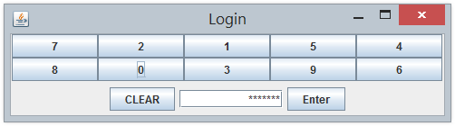

AWT GUI Applications/Applets
Ex: AWTCounter
Write an AWT GUI application (called AWTCounter) as shown in the Figure. Each time the "Count" button is clicked, the counter value shall increase by 1.
The program has three components:
- a
java.awt.Label"Counter"; - a non-editable
java.awt.TextFieldto display the counter value; and - a
java.awt.Button"Count".
The components are placed inside the top-level AWT container java.awt.Frame, arranged in FlowLayout.
1 2 3 4 5 6 7 8 9 10 11 12 13 14 15 16 17 18 19 20 21 22 23 24 25 26 27 28 29 30 31 32 33 34 35 36 37 38 39 40 41 42 43 44 45 46 47 48 49 50 |
import java.awt.*; // Using AWT's containers and components import java.awt.event.*; // Using AWT's event classes and listener interfaces // An AWT GUI program inherits the top-level container java.awt.Frame public class AWTCounter extends Frame implements ActionListener { private Label lblCount; // Declare component Label private TextField tfCount; // Declare component TextField private Button btnCount; // Declare component Button private int count = 0; // counter's value // Constructor to setup UI components and event handlers public AWTCounter () { setLayout(new FlowLayout()); // "super" Frame sets layout to FlowLayout, which arranges // Components from left-to-right, then top-to-bottom. lblCount = new Label("Counter"); // Construct component Label add(lblCount); // "super" Frame adds Label tfCount = new TextField(count + "", 10); // Construct component TextField tfCount.setEditable(false); // read-only add(tfCount); // "super" Frame adds TextField btnCount = new Button("Count"); // Construct component Button add(btnCount); // "super" Frame adds Button btnCount.addActionListener(this); // btnCount is the source object that fires ActionEvent when clicked. // The source add "this" instance as an ActionEvent listener, which provides // an ActionEvent handler called actionPerformed(). // Clicking btnCount invokes actionPerformed(). setSize(250, 100); // "super" Frame sets initial size setTitle("AWT Counter"); // "super" Frame sets title setVisible(true); // show "super" Frame } // ActionEvent handler - Called back when the button is clicked. @Override public void actionPerformed(ActionEvent evt) { ++count; // Incrase the counter value tfCount.setText(count + ""); // Display on the TextField // setText() takes a String } // The entry main() method public static void main(String[] args) { // Invoke the constructor by allocating an anonymous instance new AWTCounter(); } } |
You have to use control-c, or "close" the CMD shell, or hit the "terminate" button on Eclipse's Console to terminate the program. This is because the program does not process the WindowEvent fired by the "window-close" button.
TRY:
- Modify the program (called
AWTCounterDown) to count down, with an initial value of 88, as shown. - Modify the program (called
AWTFactorial) to display n and factorial of n, as shown. Clicking the "Next" button shall increase n by 1. n shall begin at 1.
Ex: AWTAccumulator
Write an AWT GUI application called AWTAccumulator, which has four components:
- a
java.awt.Label"Enter an integer and press enter"; - an input
java.awt.TextField; - a
java.awt.Label"The accumulated sum is", and - a protected (read-only)
java.awt.TextFieldfor displaying the accumulated sum.
The four GUI components are placed inside a container java.awt.Frame, arranged in FlowLayout. The program shall accumulate the numbers entered into the input TextField, and display the accumulated sum on the display TextField.
1 2 3 4 5 6 7 8 9 10 11 12 13 14 15 16 17 18 19 20 21 22 23 24 25 26 27 28 29 30 31 32 33 34 35 36 37 38 39 40 41 42 43 44 45 46 47 48 49 50 51 52 53 54 55 |
import java.awt.*; // Using AWT's containers and components import java.awt.event.*; // Using AWT's event classes and listener interfaces // A GUI program inherits the top-level Container java.awt.Frame public class AWTAccumulator extends Frame implements ActionListener { private Label lblInput; // Declare input Label private Label lblOutput; // Declare output Label private TextField tfInput; // Declare input TextField private TextField tfOutput; // Declare output display TextField private int sum = 0; // The accumulated sum, init to 0 // Constructor to setup the UI components and event handlers public AWTAccumulator() { setLayout(new FlowLayout()); // "super" Frame sets to FlowLayout lblInput = new Label("Enter an integer"); // Construct component Label add(lblInput); // "super" Frame adds the Label tfInput = new TextField(10); // Construct component TextField add(tfInput); // "super" Frame adds the TextField tfInput.addActionListener(this); // tfInput is a source that fires ActionEvent when entered. // The source add "this" instance as a ActionEvent listener, which provides // an ActionEvent handler called actionPerformed(). // Hitting enter on tfInput invokes actionPerformed(). lblOutput = new Label("Accumulated sum is"); // Construct component Label add(lblOutput); // "super" Frame adds Label tfOutput = new TextField(10); // Construct component TextField tfOutput.setEditable(false); // read-only add(tfOutput); // "super" Frame adds TextField setTitle("AWT Accumulator"); // "super" Frame sets title setSize(350, 120); // "super" Frame sets initial size setVisible(true); // "super" Frame shows } // The entry main() method public static void main(String[] args) { // Invoke the constructor by allocating an anonymous instance new AWTAccumulator(); } // ActionEvent handler - Called back when enter key was hit on TextField. @Override public void actionPerformed(ActionEvent evt) { int numberIn = Integer.parseInt(tfInput.getText()); // Get the String entered, convert to int sum += numberIn; // Accumulate numbers entered into sum tfInput.setText(""); // Clear input TextField tfOutput.setText("" + sum); // Display sum on the output TextField, convert int to String } } |
TRY:
- Modify the program (called
AWTAccumulatorLabel) to display the sum using aLabelinstead of a protectedTextField, as shown. - Modify the program (called
AWTFactorialTextField) to display the factorial of the input number, as shown.
Ex: AWTAccumulatorApplet
An Java applet is a graphics program run inside a browser. Write a Java applet (called AWTAccumulatorApplet) which contains:
- a
label"Enter an integer:", - a
TextFieldfor user to enter a number. - The applet shall accumulate all the integers entered and show it on the status bar of the browser's window.
1 2 3 4 5 6 7 8 9 10 11 12 13 14 15 16 17 18 19 20 21 22 23 24 25 26 27 28 29 |
import java.applet.Applet; import java.awt.*; // Using AWT's containers and components import java.awt.event.*; // Using AWT's event classes and listener interfaces // An applet extends java.applet.Applet public class AWTAccumulatorApplet extends Applet implements ActionListener { private TextField tfInput; // The input TextField private int sum = 0; // The accumulated sum, init to 0 // init() runs when the applet is loaded. Setup the UI components and event handlers. public void init() { add(new Label("Enter an integer")); // anonymous Label tfInput = new TextField(10); add(tfInput); tfInput.addActionListener(this); // Hitting enter key on tfInput invokes actionPerformed() } // ActionEvent handler - Called back when enter key was hit on TextField. public void actionPerformed( ActionEvent evt) { int numberIn = Integer.parseInt(evt.getActionCommand()); // getActionCommand() returns the String entered. sum += numberIn; tfInput.setText(""); // Clear input TextField showStatus("The accumulated sum is: " + sum); // show the sum on the status bar of the browser's window } } |
Note that:
- An applet extends from
java.applet.Applet, whereas a standalone GUI application extends fromjava.awt.Frame. You cannotsetTitle()andsetSize()on Applet. - Applet uses
init()to create the GUI, while standalone GUI application uses the constructor (invoked inmain()).
HTML codes: AWTAccumulatorApplet.html
Applet runs inside a web browser. A separate HTML script (says AWTAccumulatorApplet.html) is required, which uses an <applet> tag to embed the applet as follows:
1 2 3 4 5 6 7 8 9 10 11 |
<html>
<head>
<title>An AWT Applet</title>
</head>
<body>
<p>A simple applet which accumulates the number entered into
a TextField and displays the accumulated sum on the status bar</p>
<applet code="AWTAccumulatorApplet.class" width="300" height="60">
</applet>
</body>
</html>
|
TRY:
- Modify the applet to run the "Counter" application (as in
AWTCounter). - Modify the applet to run the "Factorial" application (as in
AWTFactorial).
Event-Handling
Ex: WindowEvent and WindowListener
Modify the AWTCounter program (called AWTCounterWithClose) to process the "Window-Close" button.
public class AWTCounterWithClose extends Frame
implements ActionListener, WindowListener {
......
// Constructor
public AWTCounterWithClose () {
......
addWindowListener(this);
// "super" Frame fires WindowEvent.
// "super" Frame add "this" instance as the WindowEvent listener
......
}
......
// WindowEvent handlers
@Override
public void windowClosing(WindowEvent evt) {
System.exit(0); // Terminate the program
}
// Not used, but need to provide an empty body to compile
@Override public void windowOpened(WindowEvent evt) { }
@Override public void windowClosed(WindowEvent evt) { }
@Override public void windowIconified(WindowEvent evt) { }
@Override public void windowDeiconified(WindowEvent evt) { }
@Override public void windowActivated(WindowEvent evt) { }
@Override public void windowDeactivated(WindowEvent evt) { }
}
Inner Class - Named and Anonymous
Compared with the AWTCounter, the following programs AWTCounterNamedInnerClass and AWTCounterAnonymousInnerClass use "named inner classes" and "anonymous inner classes", respectively, as the ActionEvent listener instead of "this" object.
A named inner class as the event listener: AWTCounterNamedInnerClass.java
1 2 3 4 5 6 7 8 9 10 11 12 13 14 15 16 17 18 19 20 21 22 23 24 25 26 27 28 29 30 31 32 33 34 35 36 37 38 39 40 41 42 43 44 |
import java.awt.*; // Using AWT's components and containers import java.awt.event.*; // Using AWT's event classes and listener interfaces public class AWTCounterNamedInnerClass extends Frame { // This class is NOT the listener, hence, it does not implement ActionListener private TextField tfCount; privete Button btnCount; private int count = 0; // Constructor to setup the UI components and event handlers public AWTCounterNamedInnerClass () { setLayout(new FlowLayout()); // "super" Frame sets to FlowLayout add(new Label("Counter")); // anonymous Label tfCount = new TextField(count + "", 10); tfCount.setEditable(false); // read-only add(tfCount); // "super" Frame adds tfCount btnCount = new Button("Count"); add(btnCount); // "super" Frame adds btnCount // Construct an anonymous instance of inner class BtnListener as // listener to the source btnCount. btnCount.addActionListener(new BtnListener()); setSize(250, 100); setTitle("AWT Counter"); setVisible(true); // show it } public static void main(String[] args) { new AWTCounterNamedInnerClass(); } // A named inner class to be used as listener of ActionEvent // This inner class can access private variables of the outer class, such as count and tfCount. private class BtnListener implements ActionListener { @Override public void actionPerformed(ActionEvent evt) { ++count; tfCount.setText(count + ""); } } } |
Explanation
- An inner class called
BtnListeneris defined, to be used as listener for theActionEventfired by theButtonbtnCount. SinceBtnListeneris anActionEventlistener, it has to implementActionListenerinterface and provide implementation to theactionPerformed()method declared in the interface. - Although instance variables
tfCount,countareprivate, the inner classBtnListenerhas access to them. This is the sole reason why an inner class is used instead of an ordinary outer class. - An anonymous instance of
BtnListeneris constructed via statement "new BtnListener()". TheButtonbtnCountregisters this anonymous instance as a listener to itsActionEventviabtnCount.addActionListener(new BtnListener()).
An anonymous Inner class as the event listener: AWTCounterAnonymousInnerClass.java
1 2 3 4 5 6 7 8 9 10 11 12 13 14 15 16 17 18 19 20 21 22 23 24 25 26 27 28 29 30 31 32 33 34 35 36 37 38 39 40 |
import java.awt.*; // Using AWT's components and containers import java.awt.event.*; // Using AWT's event classes and listener interfaces public class AWTCounterAnonymousInnerClass extends Frame { // This class is NOT the listener, hence, it does not implement ActionListener private TextField tfCount; private Button btnCount; private int count = 0; // Constructor to setup the UI components and event handlers public AWTCounterAnonymousInnerClass () { setLayout(new FlowLayout()); // "super" Frame sets to FlowLayout add(new Label("Counter")); // anonymous Label tfCount = new TextField(count + "", 10); tfCount.setEditable(false); // read-only add(tfCount); // "super" Frame adds tfCount Button btnCount = new Button("Count"); add(btnCount); // "super" Frame adds btnCount // Construct an anonymous instance of an anonymous class as // listener to the source btnCount btnCount.addActionListener(new ActionListener() { @Override public void actionPerformed(ActionEvent evt) { ++count; tfCount.setText(count + ""); } }); setSize(250, 100); setTitle("AWT Counter"); setVisible(true); // show it } public static void main(String[] args) { new AWTCounterAnonymousInnerClass(); } } |
Explanation
- An anonymous instance of an anonymous inner class is defined via
new ActionListener() { ... } - The compiler creates an anonymous inner class called
$n(wherenis a running number of inner classes) as follows:class $n implements ActionListener() { .... } new $n()
Notes: Observe the output files produced by the Java compiler. Named inner class is named "OuterClassName$InnerClassName.class" and anonymous inner class is named "OuterClassName$n.class".
TRY:
- Modify all the earlier programs to use (i) a named inner class; (ii) an anonymous inner class as the
ActionEventlistener. - Modify
AWTCount(calledAWTCounter3Buttons) to include two additional buttons for counting down and reset the count value. Use (i) "this" class as listener for all the 3 buttons; (ii) use one named inner class as listener for all the 3 buttons; (iii) use an anonymous inner class as listener for each button.
Hints for (i) and (ii):You can use event.getActionCommend()to retrieve the label of the button that has fired the event.@Override public void actionPerformed(ActionEvent evt) { String btnLabel = evt.getActionCommand(); // event.getActionCommand() returns the button's label if (btnLabel.equals("Count Up")) { ...... } else if (btnLabel.equals("Count Down")) { ...... } else { ...... } ...... }
Swing GUI Applications
Ex: Converting from AWT to Swing
Convert all the previous AWT exercises (AWTCounter, AWTAccumulator, AWTFactorial, etc.) to Swing applications (called SwingCounter, SwingAccumulator, SwingFactorial, etc.).
Notes:
- Swing Components are kept in package
javax.swing. They begin with a prefix "J", e.g.,JButton,JLabel,JFrame. - Swing Components are to be added onto the
ContentPaneof the top-level containerJFrame. You can retrieve theContentPanevia methodgetContentPane()from aJFrame.Container cp = getContentPane(); // of JFrame cp.setLayout(......); cp.add(......);
For example, SwingCounter.java:
1 2 3 4 5 6 7 8 9 10 11 12 13 14 15 16 17 18 19 20 21 22 23 24 25 26 27 28 29 30 31 32 33 34 35 36 37 38 39 40 41 42 43 44 45 46 47 48 49 50 51 52 |
import java.awt.*; // Using AWT's layouts import java.awt.event.*; // Using AWT's event classes and listener interfaces import javax.swing.*; // Using Swing components and containers // A Swing application extends javax.swing.JFrame (instead of java.awt.Frame) public class SwingCounter extends JFrame { private JTextField tfCount; // Use Swing's JTextField instead of AWT's TextField private JButton btnCount; // Using Swing's JButton instead of AWT's Button private int count = 0; public SwingCounter () { // Get the content-pane of top-level container Jframe // Components are added onto content pane Container cp = getContentPane(); cp.setLayout(new FlowLayout()); cp.add(new JLabel("Counter")); tfCount = new JTextField(count + "", 10); tfCount.setEditable(false); tfCount.setHorizontalAlignment(JTextField.RIGHT); cp.add(tfCount); btnCount = new JButton("Count"); cp.add(btnCount); btnCount.addActionListener(new ActionListener() { @Override public void actionPerformed(ActionEvent evt) { ++count; tfCount.setText(count + ""); } }); setDefaultCloseOperation(JFrame.EXIT_ON_CLOSE); // Exit program if Jframe's close-window button clicked setSize(300, 100); setTitle("Swing Counter"); setVisible(true); // show it } public static void main(String[] args) { // Recommended to run the GUI construction in // Event Dispatching thread for thread-safet operations SwingUtilities.invokeLater(new Runnable() { @Override public void run() { new SwingCounter(); // Let the constructor does the job } }); } } |
Ex: SWingAdder
Write a Swing application called SwingAdder as shown. The "ADD" button adds the two integers and display the result. The "CLEAR" button shall clear all the text fields.
Hints: Set the content-pane to 4x2 GridLayout. The components are added from left-to-right, top-to-bottom.
import java.awt.*; // Using AWT's layouts import java.awt.event.*; // Using AWT's event classes and listener interfaces import javax.swing.*; // Using Swing's components and container // A Swing application extends from javax.swing.JFrame public class SwingAdder extends JFrame { private JTextField tfNumber1, tfNumber2, tfResult; private JButton btnAdd, btnClear; private int number1, number2, result; // Constructor to set up UI components and event handlers public SwingAdder() { // Swing components should be added to the content-pane of the JFrame. Container cp = getContentPane(); // Set this Container to grid layout of 4 rows and 2 columns cp.setLayout(new GridLayout(4, 2, 10, 3)); // Components are added from left-to-right, top-to-bottom cp.add(new JLabel("First Number ")); // at (1, 1) tfNumber1 = new JTextField(10); tfNumber1.setHorizontalAlignment(JTextField.RIGHT); cp.add(tfNumber1); // at (1, 2) ....... ....... btnAdd = new JButton("ADD"); cp.add(btnAdd); // at (4, 1) btnAdd.addActionListener(new ActionListener() { @Override public void actionPerformed(ActionEvent evt) { number1 = Integer.parseInt(tfNumber1.getText()); ...... } }); btnClear = new JButton("CLEAR"); cp.add(); // at (4, 2) btnClear.addActionListener(new ActionListener() { @Override public void actionPerformed(ActionEvent evt) { ...... } }); setDefaultCloseOperation(EXIT_ON_CLOSE); // for the "window-close" button setTitle("Swing Adder"); setSize(300, 170); setVisible(true); } // The entry main() method public static void main(String[] args) { // For thread safety, use the event-dispatching thread to construct UI javax.swing.SwingUtilities.invokeLater(new Runnable() { @Override public void run() { new SwingAdder(); // Let the constructor does the job } }); } }
TRY:
- Modify the above exercise (called
SwingArithmetics) to include buttons "+", "-", "*", "/", "%" (remainder) and "CLEAR" as shown.
Ex: SwingTemperatureConverter
Write a GUI program called SwingTemperatureConverter to convert temperature values between Celsius and Fahrenheit. User can enter either the Celsius or the Fahrenheit value, in floating-point number.
Hints: To display a floating-point number in a specific format (e.g., 1 decimal place), use the static method String.format(), which has the same form as printf(). For example, String.format("%.1f", 1.234) returns String "1.2".
Ex: SwingCurrencyConverter
Write a simple currency converter, as shown in the figure. User can enter the amount of "Singapore Dollars", "US Dollars", or "Euros", in floating-point number. The converted values shall be displayed to 2 decimal places. Assume that 1 USD = 1.41 SGD, 1 USD = 0.92 Euro, 1 SGD = 0.65 Euro.
Ex: SwingCalculator
Implement a simple calculator (called SwingCalculator) as shown.
Hints:
- Set the
ContentPanetoBorderLayout. Add aJTextField(tfDisplay) to theNORHT. Add aJPanel(panelButtons) to theCENTER. Set theJPaneltoGridLayoutof 4x4, and add the 16 buttons. - All the number buttons can share the same listener as they can be processed with the same codes. Use
event.getActionCommand()to get the label of the button that fires the event. - The operator buttons "
+", "-", "*", "/", "%" and "=" can share a common listener. - Use an anonymous inner class for "
C" button. - You need to keep track of the previous operator. For example in "1 + 2 =", the current operator is "=", while the previous operator is "+". Perform the operation specified by the previous operator.
import java.awt.*; import java.awt.event.*; import javax.swing.*; // Using Swing's components and containers // A Swing application extends from javax.swing.JFrame public class SwingCalculator extends JFrame { private JTextField tfDisplay; private int result = 0; // the result so far private String numberInStr = ""; // the number entered as String private char previousOpr = ' '; // the previous operator private char currentOpr = ' '; // the current operator // Constructor to setup the UI components and event handlers public SwingCalculator() { // TODO: Setup the UI // ...... } // Number buttons listener (inner class) class NumberBtnListener implements ActionListener { @Override public void actionPerformed(ActionEvent evt) { numberInStr += evt.getActionCommand(); tfDisplay.setText(numberInStr); } } // Operator buttons listener (inner class) class OprBtnListener implements ActionListener { @Override public void actionPerformed(ActionEvent evt) { previousOpr = currentOpr; // save currentOpr = evt.getActionCommand().charAt(0); // TODO: Processing logic // ...... } } }
Ex: SwingNumberGuess
Write a number guessing game in Swing (as shown in the Figure). The program shall generate a random number between 1 to 100. It shall mask out the random number generated and output "Yot Got it", "Try Higher" or "Try Lower" depending on the user’s input.
Hints:
- You can use
Math.random()to generate a random number indoublein the range of[0.0, 1.0).
Ex: SwingPhoneApp
Write a Software Phone App using Java Swing as illustrated in the figure. The user enters the phone number and pushes the "CALL" button to start a phone call. Once the call is started, the label of the "CALL" button changes to "HANG UP". When the user hangs up, the display is cleared.
Assume that the following 2 methods are available for handling phone call:
public void call(String phoneNumber); // to make a phone call with the phoneNumber public void hangup(); // to terminate the existing call
Hints:
- Use a 10-element
JButtonarray to hold the 10 numeric buttons. Construct a common instance of a named inner class as theActionListenerfor the 10 numeric buttons. - Use a
booleanflag (saysisCalling) to keep track of the status.
Ex: SwingLoginPanel
A Java Swing application has a login page as shown in the Figure. Users are required to enter the correct passcode to start the application. The system uses a scramble keypad with a randomly allocated set of numbers from 0 to 9. The display shall show "Enter passcode" initially, and show an asterisk (*) for each number entered. Upon pushing the "Enter" button, the system verifies the passcode. If the passcode is correct, the system invokes a method called startApp() to start the application. Otherwise, it displays "Wrong passcode". The "Clear" button shall clear the display.
Assume that the following methods are available:
public String getPasscode(); // return the passcode public void startApp(); // Start the application public void shuffleArray(int[] array) // Shuffle (Randomize) the given int array, e.g., // int[] numbers = {1, 2, 3, 4, 5}; // shuffleArray(numbers); // randomize the elements
Ex: SwingLock
Write a Java Swing application for an electronic lock as shown in the figure. The display shall show the state of either "CLOSE" or "OPEN". In the "CLOSE" state, the user types his PIN followed by the "Enter" key to unlock the system. The display shall show an asterisk (*) for each number entered. The display shall show "WRONG PIN" if the PIN is incorrect. The "Clear" button clears the number entered (if any), locks the system and sets the display to "CLOSE".
Assume that the following methods are available:
public boolean checkPIN(String PIN); // return true for correct PIN public void unlock(); // Unlock the system public void lock(); // Lock the system
Hints:
- Use a 10-element
JButtonarray to hold the 10 numberic buttons. Construct a common instance of a named inner class as theirActionListener. - Use a
booleanflag (saysisLocked) to keep track of the status.
Ex: Using Eclipse/NetBeans GUI Builder
Write the SwingCounter using Eclipse/NetBeans' GUI builder. Read the respecctive section in "Eclipse How-To" or "NetBeans Hot-To".
Study the code generated by Eclispse/NetBeans.
Ex: Sudoku
See the Sudoku Article.
Ex: Mine Sweeper

See the Mine Sweeper Article.
Custom Graphics
Ex: MoveABall
Study the "Move-a-line" program. Modifying the program to move a ball in response to up/down/left/right buttons, as well as the 4 arrow keys, as shown.
Ex: TicTacToe
See the Mine Sweeper Article.
REFERENCES & RESOURCES